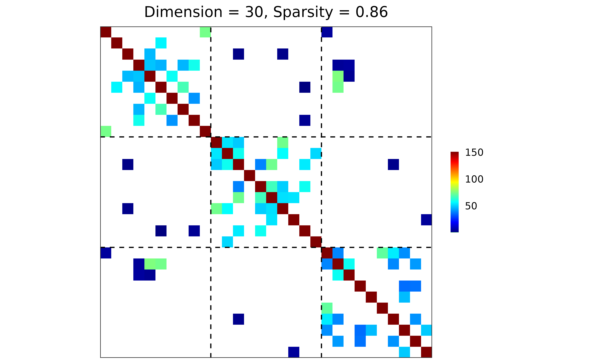

Compute a collection of loss-based and structure-based measures to evaluate the performance of an estimated precision matrix.
Value
A data frame of S3 class "performance", with one row per performance
metric and two columns:
- measure
The name of each performance metric. The reported metrics include: sparsity, Frobenius norm loss, Kullback-Leibler divergence, quadratic norm loss, spectral norm loss, true positive, true negative, false positive, false negative, true positive rate, false positive rate, F1 score, and Matthews correlation coefficient.
- value
The corresponding numeric value.
Details
Let \(\Omega_{d \times d}\) and \(\hat{\Omega}_{d \times d}\) be the reference (true) and estimated precision matrices, respectively, with \(\Sigma = \Omega^{-1}\) being the corresponding covariance matrix. Edges are defined by nonzero off-diagonal entries in the upper triangle of the precision matrices.
Sparsity is treated as a structural summary, while the remaining measures are grouped into loss-based measures, raw confusion-matrix counts, and classification-based (structure-recovery) measures.
"sparsity": Sparsity is computed as the proportion of zero entries among the off-diagonal elements in the upper triangle of \(\hat{\Omega}\).
Loss-based measures:
"Frobenius": Frobenius (Hilbert-Schmidt) norm loss \(= \Vert \Omega - \hat{\Omega} \Vert_F\).
"KL": Kullback-Leibler divergence \(= \mathrm{tr}(\Sigma \hat{\Omega}) - \log\det(\Sigma \hat{\Omega}) - d\).
"quadratic": Quadratic norm loss \(= \Vert \Sigma \hat{\Omega} - I_d \Vert_F^2\).
"spectral": Spectral (operator) norm loss \(= \Vert \Omega - \hat{\Omega} \Vert_{2,2} = e_1\), where \(e_1^2\) is the largest eigenvalue of \((\Omega - \hat{\Omega})^2\).
Confusion-matrix counts:
"TP": True positive \(=\) number of edges in both \(\Omega\) and \(\hat{\Omega}\).
"TN": True negative \(=\) number of edges in neither \(\Omega\) nor \(\hat{\Omega}\).
"FP": False positive \(=\) number of edges in \(\hat{\Omega}\) but not in \(\Omega\).
"FN": False negative \(=\) number of edges in \(\Omega\) but not in \(\hat{\Omega}\).
Classification-based (structure-recovery) measures:
"TPR": True positive rate (TPR), recall, sensitivity \(= \mathrm{TP} / (\mathrm{TP} + \mathrm{FN})\).
"FPR": False positive rate (FPR) \(= \mathrm{FP} / (\mathrm{FP} + \mathrm{TN})\).
"F1": \(F_1\) score \(= 2\,\mathrm{TP} / (2\,\mathrm{TP} + \mathrm{FN} + \mathrm{FP})\)
"MCC": Matthews correlation coefficient (MCC) \(= (\mathrm{TP}\times\mathrm{TN} - \mathrm{FP}\times\mathrm{FN}) / \sqrt{(\mathrm{TP}+\mathrm{FP})(\mathrm{TP}+\mathrm{FN}) (\mathrm{TN}+\mathrm{FP})(\mathrm{TN}+\mathrm{FN})}\)
The following table summarizes the confusion matrix and related rates:
| Predicted Positive | Predicted Negative | |||
| Real Positive (P) | True positive (TP) | False negative (FN) | True positive rate (TPR), recall, sensitivity = TP / P = 1 - FNR | False negative rate (FNR) = FN / P = 1 - TPR |
| Real Negative (N) | False positive (FP) | True negative (TN) | False positive rate (FPR) = FP / N = 1 - TNR | True negative rate (TNR), specificity = TN / N = 1 - FPR |
| Positive predictive value (PPV), precision = TP / (TP + FP) = 1 - FDR | False omission rate (FOR) = FN / (TN + FN) = 1 - NPV | |||
| False discovery rate (FDR) = FP / (TP + FP) = 1 - PPV | Negative predictive value (NPV) = TN / (TN + FN) = 1 - FOR |
Examples
library(grasps)
## reproducibility for everything
set.seed(1234)
## block-structured precision matrix based on SBM
sim <- gen_prec_sbm(d = 30, K = 3,
within.prob = 0.25, between.prob = 0.05,
weight.dists = list("gamma", "unif"),
weight.paras = list(c(shape = 10, scale = 5),
c(min = 0, max = 5)),
cond.target = 100)
## visualization
plot(sim)

## n-by-d data matrix
library(MASS)
X <- mvrnorm(n = 20, mu = rep(0, 30), Sigma = sim$Sigma)
## adapt, BIC
res <- grasps(X = X, membership = sim$membership, penalty = "adapt", crit = "BIC")
## visualization
plot(res)
 ## performance
performance(hatOmega = res$hatOmega, Omega = sim$Omega)
#> measure value
#> 1 sparsity 0.8368
#> 2 Frobenius 460.8652
#> 3 KL 8.4102
#> 4 quadratic 132.4547
#> 5 spectral 171.4447
#> 6 TP 25.0000
#> 7 TN 341.0000
#> 8 FP 46.0000
#> 9 FN 23.0000
#> 10 TPR 0.5208
#> 11 FPR 0.1189
#> 12 F1 0.4202
#> 13 MCC 0.3408
## performance
performance(hatOmega = res$hatOmega, Omega = sim$Omega)
#> measure value
#> 1 sparsity 0.8368
#> 2 Frobenius 460.8652
#> 3 KL 8.4102
#> 4 quadratic 132.4547
#> 5 spectral 171.4447
#> 6 TP 25.0000
#> 7 TN 341.0000
#> 8 FP 46.0000
#> 9 FN 23.0000
#> 10 TPR 0.5208
#> 11 FPR 0.1189
#> 12 F1 0.4202
#> 13 MCC 0.3408